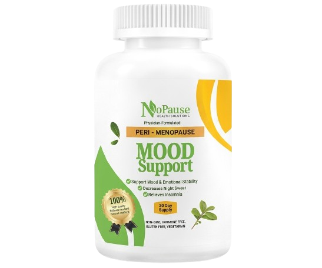

A physician-formulated blend designed to support mood, ease night sweats, and relieve insomnia during peri-menopause.
Add to Cart — $49.99
Each ingredient is selected for its potential role in supporting mood, sleep, and emotional resilience. Review with a clinician before starting any new supplement.
Traditionally used to support calmness and restful sleep, often in combination with other herbal ingredients.
Herbal ingredients should be reviewed for interactions and sensitivity before use.
Often used to support stress resilience and sleep quality in the context of menopause-related symptoms.
Commonly reviewed for sleep and stress support in clinical conversations.
Traditionally studied for its potential role in supporting mood and comfort during menopause.
Fenugreek should be reviewed with a clinician before use, especially with medications.
Supports energy production and mood stability, both of which can be relevant during the menopause transition.
B vitamins are essential nutrients often reviewed for energy and mood support.
Supports bone health and mood stability, both of which are relevant during the menopause transition.
Vitamin D status is commonly reviewed in menopause care and bone health conversations.
Supports metabolic health and may help with blood sugar stability, a common concern during menopause.
Chromium is often reviewed for metabolic support and blood sugar stability.
$49.99 $55.00